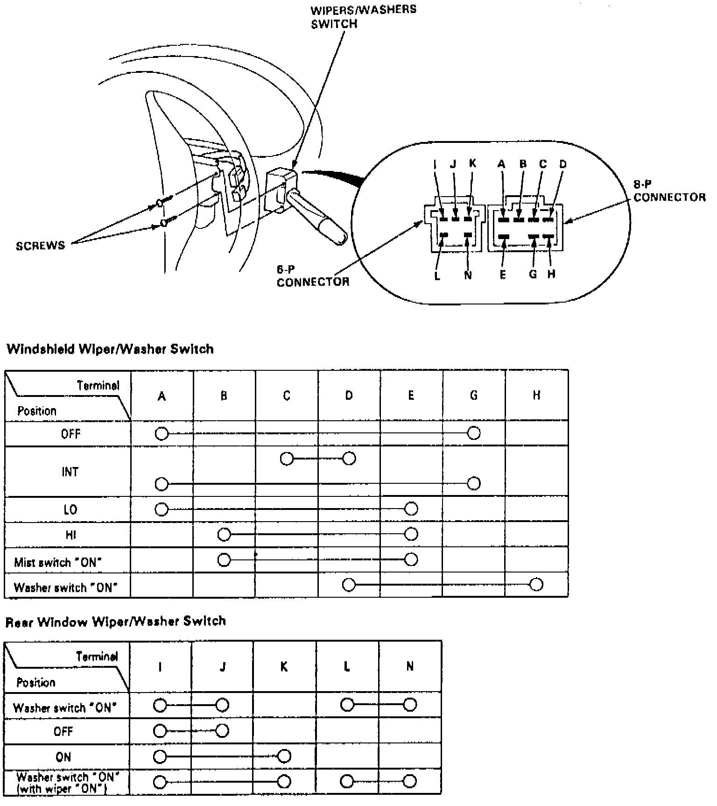

Windshield Washer Switch: Testing and Inspection
1. On models equipped with radio coded theft protection system, refer to Vehicle Damage Warnings for system disarming and arming procedures. On models equipped with airbag system, refer to Technician Safety Information for system disarming and arming procedures.Fig. 9 Washer/Wiper Switch Test:

2. Remove steering column covers, then check for continuity between terminals as shown in Fig. 9.
3. On models equipped with radio coded theft protection system, refer to Vehicle Damage Warnings for system disarming and arming procedures. On models equipped with airbag system, refer to Technician Safety Information for system disarming and arming procedures.